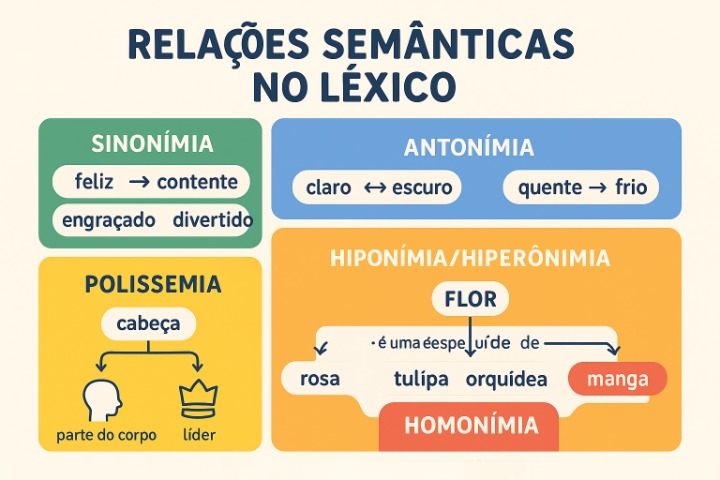

Relações Semânticas no Léxico: Conexões de Sentido, Redes Mentais e Coesão Textual
O vocabulário de uma língua não se comporta como um repositório caótico de palavras isoladas, nem como uma lista alfabética e estática semelhante a um dicionário impresso. O acervo de termos que dominamos organiza-se no que a psicolinguística e as ciências cognitivas denominam léxico mental: uma sofisticada rede hipertextual de nós e conexões conceituais, na qual cada palavra está interligada a inúmeras outras por vínculos de semelhança, contraste, hierarquia taxonômica e dependência contextual.
No campo da Semântica Lexical, essas conexões estruturantes são conhecidas como relações semânticas. Investigadas desde a Antiguidade e formalizadas por linguistas como John Lyons (1977), Stephen Ullmann (1982) e Eugenio Coseriu (1977), tais relações governam como agrupamos significados no pensamento e como selecionamos termos com precisão durante a fala e a escrita.
Compreender fenômenos como sinonímia, antonímia, hiperonímia, hiponímia, polissemia e homonímia é decisivo para o domínio da linguagem. Esse repertório não apenas enriquece a capacidade expressiva, mas constitui o motor da coesão lexical anafórica — recurso essencial para evitar repetições viciosas e conferir progressão temática a redações acadêmicas e textos dissertativos de alta complexidade.

A arquitetura do léxico mental: como a mente organiza os significados
Estudos pioneiros em psicologia cognitiva, como o modelo de redes semânticas proposto por Collins e Quillian (1969) e aprofundado por Jean Aitchison (2003), demonstram que as palavras são armazenadas no cérebro por meio de ativação por dispersão. Quando escutamos ou lemos um vocábulo (como médico), a rede neural ativa quase instantaneamente termos correlatos por proximidade semântica: hospital (campo associativo), doutor (sinonímia), paciente (reciprocidade) e cirurgião (hiponímia).
A economia da cognição e a estruturação lexical
Para Rodolfo Ilari e João Wanderley Geraldi (2006), as relações semânticas refletem a maneira pela qual a cultura humana categoriza a realidade sensível. A língua economiza memória ao criar classes gerais e subclasses específicas, permitindo que o falante recupere informações com agilidade impressionante durante o processamento em tempo real da fala e da leitura.
As principais relações semânticas paradigmáticas
As relações entre as palavras ocorrem no eixo paradigmático da linguagem — isto é, no plano das escolhas lexicais disponíveis que disputam o mesmo espaço sintático na frase. A seguir, detalham-se as seis relações cardeais do sistema léxico:
1. Sinonímia: a proximidade semântica e a ilusão da equivalência absoluta
A sinonímia é a relação que se estabelece entre duas ou mais palavras que compartilham traços semânticos essenciais e podem, em determinados contextos, substituir-se sem alterar radicalmente o valor de verdade do enunciado.
A maioria dos semânticos adverte que a sinonímia perfeita ou absoluta é um fenômeno raríssimo nas línguas naturais. Dois termos dificilmente são 100% intercambiáveis em todas as situações, pois costumam divergir em:
- Nível de formalidade e registro: falecer (formal/cerimonioso), morrer (neutro), bater as botas (coloquial/gíria);
- Intensidade e carga afetiva: gostar versus adorar ou venerar;
- Restrições de coocorrência (colocação): diz-se café forte, mas nunca café potente, embora forte e potente sejam sinônimos em outros contextos (como motor forte / potente).
Exemplos de Sinonímia Contextual
• "Ela ficou feliz com o resultado do concurso."
• "Ela ficou contente com o resultado do concurso."
• "O documentário exibido é muito divertido."
• "O documentário exibido é muito engraçado."
Variação de Matiz e Registro
Embora feliz e contente compartilhem o núcleo de satisfação emocional, feliz costuma evocar um estado existencial mais duradouro e profundo, enquanto contente expressa uma reação pontual a um estímulo imediato.
2. Antonímia: os múltiplos tipos de oposição semântica
A antonímia designa a relação de contrariedade ou oposição entre termos. Longe de ser uma simples negação mecânica, os antônimos organizam o pensamento por meio de contrastes lógicos que se subdividem em três categorias estruturais:
| Classificação da Antonímia | Definição e Funcionamento Lógico | Pares Exemplares |
|---|---|---|
| Contraditória (Binária / Complementar) | Oposição excludente e absoluta: a afirmação de um termo implica obrigatoriamente a negação do outro, sem meio-termo possível. | Vivo × Morto; Presente × Ausente; Par × Ímpar; Aceso × Apagado. |
| Contrária (Gradual / Escalar) | Oposição ao longo de uma escala contínua que admite graus intermediários e relativos. | Quente × Frio (admite morno, fresco); Alto × Baixo (admite mediano); Rico × Pobre. |
| Recíproca (Relacional / Conversos) | Oposição de papéis interdependentes em que um termo pressupõe necessariamente a existência simultânea do outro sob perspectiva inversa. | Comprar × Vender; Professor × Aluno; Pai × Filho; Médico × Paciente. |
3. Hiperonímia e Hiponímia: a hierarquia conceitual da linguagem
A relação entre hiperônimo e hipônimo é uma relação assimétrica de inclusão semântica e hierarquia taxonômica:
- Hiperônimo: é o termo de maior extensão semântica e menor especificação; funciona como a categoria mais ampla e genérica que engloba outras palavras (termo superordenado).
- Hipônimo: é o termo de menor extensão e maior intensão (maior riqueza de traços distintivos específicos); fica subordinado ao hiperônimo (termo subordinado).
Aplicações e Exemplos de Inclusão Conceitual
• "A rosa é uma flor muito perfumada."
Rosa = hipônimo (espécie específica) | Flor = hiperônimo (categoria botânica ampla).
• "O pastor-alemão é um cão extremamente leal."
Pastor-alemão = hipônimo | Cão = hiperônimo (que, por sua vez, é hipônimo de mamífero e animal).
• "O agricultor colheu mangas e laranjas no pomar, comercializando essas frutas na cooperativa."
O hiperônimo frutas retoma anaphoricamente os hipônimos específicos, garantindo a coesão textual sem redundância.
4. Polissemia: uma única palavra com múltiplos sentidos conectados
Ocorre quando uma mesma forma lexical abriga diversas acepções que guardam entre si um parentesco conceitual evidente, geralmente derivado de processos de extensão metafórica ou metonímica:
- Cabeça: "A cabeça dói com a enxaqueca" (parte anatômica) / "Ele é a cabeça pensante da equipe" (líder intelectual por analogia à função cerebral) / "Ela comeu uma cabeça de alho" (formato globular similar).
- Linha: "O costureiro usou linha preta" (fio têxtil) / "O ônibus daquela linha atrasou" (itinerário regular) / "O teórico adotou uma linha inovadora" (orientação metodológica).
5. Homonímia: coincidências formais entre palavras independentes
Diferentemente da polissemia, a homonímia envolve vocábulos totalmente distintos, com étimos e histórias linguísticas separadas, que passaram a coincidir na matéria sonora ou gráfica:
- Homófonos (mesmo som, grafias diferentes): Cela (quarto monástico/prisão) × Sela (arreio de cavalo); Cessão (ato de ceder) × Seção/Secção (divisão/repartição) × Sessão (espaço de tempo/reunião).
- Homógrafos heterofônicos (mesma grafia, sons diferentes pelo timbre): Almoço (substantivo com /ô/ fechado) × Almoço (forma verbal de almoçar com /ó/ aberto); Colher (substantivo com /é/) × Colher (verbo com /ê/).
- Homônimos perfeitos (mesma grafia e mesmo som): Manga (fruto da mangueira) × Manga (parte da vestimenta); Caminho (substantivo correspondente a trajeto) × Caminho (forma do verbo caminhar).
Atenção pedagógica: não confunda homonímia com polissemia!
Para distinguir ambos com segurança, analise se existe ou não parentesco de sentido: as acepções de pena em "pena de galinha" e "pena de reclusão" constituem homonímia perfeita (origens etimológicas distintas: penna e poena). Já os sentidos de braço em "braço do atleta" e "braço da cadeira" constituem polissemia (projeção metafórica do membro de sustentação humano para o móvel).
O papel das relações lexicais na coesão textual e na redação
Dominar as relações semânticas é uma das competências mais valorizadas na produção de textos dissertativo-argumentativos, a exemplo da Competência 4 da Redação do ENEM (mecanismos linguísticos de coesão). Um texto maduro evita a repetição cansativa de vocábulos substituindo-os estrategicamente:
- Substituição por hiperônimo (Generalização anafórica): "O governo adquiriu novas ambulâncias. Os veículos serão distribuídos aos postos de saúde."
- Substituição por sinônimo aproximado: "O projeto visa erradicar a extrema pobreza no semiárido. A meta de extinguir a vulnerabilidade social mobiliza verbas públicas."
- Contraste por antonímia na tese argumentativa: "Enquanto as elites desfrutam de abundância alimentar, a periferia convive com a escassez nutricional crônica."
Exemplo prático de análise: a rede semântica em uma crônica
Texto em Análise
"O velho magistrado entrou na sala com passos lentos. Sobre a mesa, encontrou um relatório sucinto que desarmava qualquer acusação complexa. Sentou-se no banco de madeira polida e folheou o calhamaço. O peso daquela sentença ultrapassava o código; tratava-se de decidir sobre a liberdade de um jovem cujo único crime fora sonhar alto demais."
Roteiro de Identificação das Relações Semânticas
- Sinonímia contextual: "magistrado" atua como sinônimo formal e reverente de juiz.
- Antonímia em contraste: o relatório é qualificado como "sucinto" (curto/breve), em antítese composicional à acusação que se pretendia "complexa" e ao "calhamaço" (extenso).
- Polissemia em ação: "banco" adquire o sentido de assento coletivo; "peso" opera no domínio metafórico da responsabilidade moral e angústia decisória.
- Hiperonímia na qualificação penal: "crime" funciona como hiperônimo abstrato utilizado ironicamente para englobar a conduta de "sonhar alto demais".
Esquema pedagógico: o mapa das relações léxico-semânticas
Rede estrutural do vocabulário em Língua Portuguesa
Relações de Semelhança (Sinonímia: proximidade conceitual e matizes de registro) ↔ Relações de Oposição (Antonímia: contradição, contrariedade e reciprocidade) ↔ Relações de Hierarquia (Hiperonímia: termo geral / Hiponímia: termo específico) ↔ Relações de Multiplicidade (Polissemia: uma palavra, vários sentidos afins) ↔ Relações de Coincidência (Homonímia: palavras distintas com som ou grafia idênticos).
Questões para estudo e reflexão
Questão 1
Por que a linguística contemporânea sustenta que a "sinonímia perfeita" é praticamente inexistente nas línguas naturais?
Ver resposta comentada
Resposta comentada: Porque dois vocábulos quase nunca coincidem simultaneamente em todos os seus aspectos semânticos, estilísticos, afetivos e pragmáticos. Mesmo quando compartilham o mesmo significado conceitual básico (denotação), costumam diferenciar-se quanto ao nível de formalidade (registro), à época de uso, à intensidade expressiva ou às suas restrições de combinação sintática com outras palavras.
Questão 2
Qual é a distinção conceitual e lógica entre antônimos contraditórios e antônimos contrários? Exemplifique.
Ver resposta comentada
Resposta comentada: Os antônimos contraditórios (binários ou complementares) formam uma oposição absoluta e excludente que não admite meio-termo: a afirmação de um acarreta necessariamente a negação do outro (exemplo: vivo × morto). Já os antônimos contrários (graduais) localizam-se nas extremidades de uma escala contínua que admite termos intermediários (exemplo: quente × frio, que admite morno ou fresco).
Questão 3
Como a relação de hiperonímia e hiponímia atua como recurso estratégico para garantir a coesão referencial na redação?
Ver resposta comentada
Resposta comentada: A hiperonímia permite retomar elementos já citados no texto sem repetir a mesma palavra. O autor introduz primeiro termos específicos (hipônimos) e, nas orações seguintes, retoma-os por meio de uma categoria conceitual mais ampla (hiperônimo), garantindo fluidez leitora, síntese de ideias e continuidade temática (exemplo: citar ônibus, metrôs e trens e retomá-los adiante por meios de transporte público).
Questão 4
Qual critério etimológico e semântico é utilizado para diferenciar a polissemia da homonímia perfeita?
Ver resposta comentada
Resposta comentada: O critério reside na origem histórica (étimo) e na existência de um elo semântico de base. Na polissemia, trata-se de um único vocábulo cujas acepções derivam da mesma matriz conceitual por metáfora ou metonímia (como pé da mesa e pé humano). Na homonímia perfeita, são palavras historicamente distintas, com étimos e trajetórias autônomas, que coincidem acidentalmente no som e na grafia sem manter nenhum parentesco semântico (como manga fruta e manga de camisa).
Questão 5
Em que categoria de homonímia se enquadram pares como "sessão", "seção" e "cessão"? Justifique.
Ver resposta comentada
Resposta comentada: Enquadram-se como homônimos homófonos, pois apresentam exatamente a mesma realização fonética e sonora na fala (/sẽ.sˈãw̃/), mas diferem na forma gráfica escrita (grafia com ss, com ç ou iniciada por c) e carregam significados completamente independentes (espaço de tempo, divisão administrativa e ato de ceder direitos).
Resumo sobre relações semânticas no léxico
- O léxico mental é organizado sob a forma de redes cognitivas associativas e dinâmicas;
- A sinonímia envolve proximidade de sentido, variando frequentemente em registro, tom e intensidade expressiva;
- A antonímia abrange três tipos lógicos: contraditória (binária estrita), contrária (gradual em escala) e recíproca (conversos interdependentes);
- A hiperonímia representa a categoria superordenada e ampla, enquanto a hiponímia designa os membros subordinados e específicos dessa classe;
- A polissemia expressa a ramificação de sentidos afins de uma mesma palavra a partir de uma raiz conceitual comum;
- A homonímia resulta da convergência puramente acidental de palavras independentes em sua pronúncia (homófonos), grafia (homógrafos) ou em ambos (perfeitos);
- Essas relações constituem o alicerce da coesão lexical, da variedade de vocabulário e da clareza estilística na produção textual.
Perguntas frequentes sobre relações semânticas
O que são relações semânticas no léxico?
São as conexões de significado que as palavras estabelecem entre si dentro do sistema vocabular de uma língua, organizando a compreensão por meio de igualdade aproximada, contraste, inclusão categórica ou multiplicidade de sentidos.
O que é o léxico mental?
É a representação interna de todo o conhecimento que os falantes possuem sobre as palavras de sua língua, incluindo pronúncia, categoria gramatical, significado e suas redes de conexões semânticas com outros termos.
Existe sinônimo perfeito na língua portuguesa?
Praticamente não. Quase todos os sinônimos sofrem pequenas variações de formalidade, de conotação emocional, de época ou de colocação sintática (por exemplo, rosto, face e cara compartilham o mesmo conceito anatômico, mas possuem níveis de formalidade e usos sociais muito distintos).
Qual a diferença entre hiperônimo e hipônimo?
O hiperônimo é a palavra genérica que engloba um conjunto (ex.: veículo), enquanto o hipônimo é a palavra específica pertencente a essa classe (ex.: carro, motocicleta, bicicleta).
O que é um par antônimo recíproco?
É aquele formado por palavras que descrevem a mesma relação a partir de perspectivas inversas e mutuamente dependentes, como ensinar e aprender, ou comprar e vender.
Como a hiperonímia ajuda na nota da redação do ENEM?
Ela permite ao estudante retomar tópicos e palavras-chave ao longo dos parágrafos sem cair na repetição vocabular exaustiva, demonstrando domínio refinado dos mecanismos de coesão anafórica avaliados na Competência 4.
O que são homônimos homógrafos heterofônicos?
São palavras grafadas exatamente com as mesmas letras, mas cuja pronúncia varia no timbre ou na posição da sílaba tônica, como o substantivo jogo (vogal fechada) e o verbo jogo (vogal aberta).
Por que as palavras polissêmicas não costumam gerar confusão na conversa diária?
Porque o contexto situacional e as demais palavras que integram a frase (cotexto) filtram automaticamente as interpretações incompatíveis, ativando na mente do ouvinte apenas a acepção pretendida.
Considerações finais
O estudo das relações semânticas no léxico revela que a competência linguística não é uma capacidade mecânica de decodificar dicionários, mas uma habilidade sofisticada de navegar por redes interconectadas de sentido. Cada vocábulo selecionado projeta ecos de seus sinônimos descartados, de seus antônimos possíveis e de sua árvore conceitual de filiação.
Ao tomar consciência dessas engrenagens semânticas, estudantes e escritores elevam a precisão de seus textos, desenvolvem recursos argumentativos consistentes e tornam-se leitores capazes de identificar com agudeza as intenções, ênfases e silenciamentos presentes nos mais diversos gêneros discursivos.
Conteúdos relacionados
- Noções Iniciais de Semântica: o Significado nas Palavras
- Denotação e Conotação: Sentidos Literal e Figurado na Linguagem
- Campo Semântico e Campo Lexical: Redes e Famílias de Palavras
- Polissemia e Homonímia: Fenômenos dos Múltiplos Sentidos
- Ambiguidade e Inferência Semântica no Contexto Textual
- Semântica e Pragmática: Significado e Uso da Linguagem
- Semântica — Índice Completo de Conteúdos
Referências
- AITCHISON, Jean. Words in the mind: an introduction to the mental lexicon. 3. ed. Oxford: Blackwell, 2003.
- CANÇADO, Márcia. Manual de semântica: noções básicas e exercícios. 3. ed. São Paulo: Contexto, 2012.
- COLLINS, Allan M.; QUILLIAN, M. Ross. Retrieval time from semantic memory. Journal of Verbal Learning and Verbal Behavior, v. 8, n. 2, p. 240-247, 1969.
- COSERIU, Eugenio. Principios de semántica estructural. Madrid: Gredos, 1977.
- FERRAREZI JÚNIOR, Celso. Semântica para a educação básica. São Paulo: Parábola Editorial, 2008.
- ILARI, Rodolfo; GERALDI, João Wanderley. Semântica. 11. ed. São Paulo: Ática, 2006.
- LYONS, John. Semantics. Cambridge: Cambridge University Press, 1977. v. 1 e 2.
- SAUSSURE, Ferdinand de. Curso de Linguística Geral. 27. ed. São Paulo: Cultrix, 2006 [1916].
- ULLMANN, Stephen. Semântica: uma introdução à ciência do significado. 5. ed. Lisboa: Fundação Calouste Gulbenkian, 1982.
Explore Outros Conteúdos
Continue seus estudos acessando outras seções do site Mestre Kira: